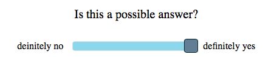

Instructions
You will watch a short story followed by a summary. Then you will hear a question. The question will appear in bold. Below you will see an answer. Your goal is to assess whether that is a possible answer to the question above using a slider. For example, you could see the following pair:
Who bought what?
Jane bought milk, Susan bought pasta, and James bought bread.

Let's look at another example:
What did nobody buy?
Jane didn't buy milk, Susan didn't buy pasta, and James didn't buy bread.

There will be two practice trials before the experiment begins. You will have to click the video to start it. Please make sure your volume is turned up, because there will be an audio component.
Click continue to begin with some practice trials.